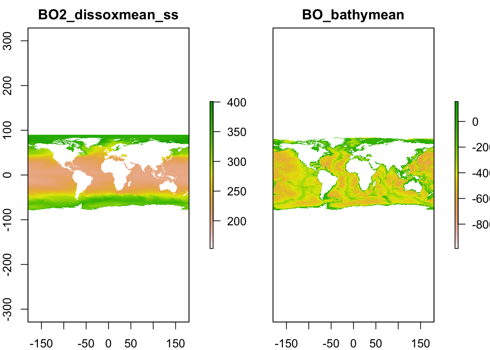

Atividade 2
Padrões de diversidade e extração de variáveis marinhas
2.1 Dados de peixes recifais
Para esta atividade, vamos precisar dos arquivos utilizados e criados
na atividade 1. Para a atividade 2,
partiremos dos primeiros passos da atividade 1. Para tal, bastar rodar
este chunck de código abaixo. Caso já esteja com este
arquivo preparado no ambiente do RStudio, ignore este passo.
library(letsR)
library(tidyverse)
# Importanto o shapefile
borb <- rgdal::readOGR(dsn = "data/Chaetodontidae_NewWorld.shp")## OGR data source with driver: ESRI Shapefile
## Source: "/Users/cesarcordeiro/git/macroecologia-UENF_2022/data/Chaetodontidae_NewWorld.shp", layer: "Chaetodontidae_NewWorld"
## with 29 features
## It has 27 fields
## Integer64 fields read as strings: id_no# Criando raster
borb_maps <- lets.presab(borb, resol = 3,
xmn = -130, xmx = 40, # America range
ymn = -38, ymx = 45, # America range
cover = 0.01)2.2 Preditores climáticos globais
2.2.1 Baixando, carregando e conferindo os dados marinhos
Agora que já conhecemos como a riqueza de espécies varia ao longo do
espaço, precisamos tentar descobrir quais são os mecanismos por trás dos
padrões espaciais. Para isso, vamos testar o efeito de variáveis
climáticas na riqueza de espécies em questão por meio de modelos
lineares simples. Antes disso, devemos recorrer a uma base de dados
previamente estabelecida que nos forneça as variáveis climáticas de
interesse. Para isso, você pode procurar no site do BioOracle e encontrará muitos dos
dados de que vai precisar. Você também precisará de uma conexão internet
para baixar os dados do BioOracle (~ 11MB). Vamos utilizar o pacote
sdmpredictors para obter diretamente estes dados. Assim,
nossas análises tanto espaciais (SIG quanto estatísticas) ficarão todas
dentro do R. Isto facilita a manipulação das planilhas e a realização
dos modelos. Vamos explorar algumas das variáveis marinhas disponíveis
para o mundo.
Execute as linhas abaixo e gaste um tempo para ler as informações e variáveis disponíveis.
# caso não tenha instalado e carregado o pacote
# install.packages('sdmpredictors') Carregue o package
library(sdmpredictors)
# Explore os dados do pacote
list_datasets()## dataset_code terrestrial marine url
## 1 WorldClim TRUE FALSE http://www.worldclim.org/
## 2 Bio-ORACLE FALSE TRUE hhtp://bio-oracle.org/
## 3 MARSPEC FALSE TRUE http://marspec.org/
## 4 ENVIREM TRUE FALSE https://envirem.github.io/
## 5 Freshwater TRUE FALSE https://www.earthenv.org/streams
## description
## 1 WorldClim is a set of global climate layers (climate grids). Note that all data has been transformed back to real values, so there is no need to e.g. divide temperature layers by 10.
## 2 Bio-ORACLE is a set of GIS rasters providing geophysical, biotic and environmental data for surface and benthic marine realms at a spatial resolution 5 arcmin (9.2 km) in the ESRI ascii and tif format.
## 3 MARSPEC is a set of high resolution climatic and geophysical GIS data layers for the world ocean. Seven geophysical variables were derived from the SRTM30_PLUS high resolution bathymetry dataset. These layers characterize the horizontal orientation (aspect), slope, and curvature of the seafloor and the distance from shore. Ten "bioclimatic" variables were derived from NOAA's World Ocean Atlas and NASA's MODIS satellite imagery and characterize the inter-annual means, extremes, and variances in sea surface temperature and salinity. These variables will be useful to those interested in the spatial ecology of marine shallow-water and surface-associated pelagic organisms across the globe. Note that, in contrary to the original MARSPEC, all layers have unscaled values.
## 4 The ENVIREM dataset is a set of 16 climatic and 2 topographic variables that can be used in modeling species' distributions. The strengths of this dataset include their close ties to ecological processes, and their availability at a global scale, at several spatial resolutions, and for several time periods. The underlying temperature and precipitation data that went into their construction comes from the WorldClim dataset (www.worldclim.org), and the solar radiation data comes from the Consortium for Spatial Information (www.cgiar-csi.org). The data are compatible with and expand the set of variables from WorldClim v1.4 (www.worldclim.org).
## 5 The dataset consists of near-global, spatially continuous, and freshwater-specific environmental variables in a standardized 1km grid. We delineated the sub-catchment for each grid cell along the HydroSHEDS river network and summarized the upstream environment (climate, topography, land cover, surface geology and soil) to each grid cell using various metrics (average, minimum, maximum, range, sum, inverse distance-weighted average and sum). All variables were subsequently averaged across single lakes and reservoirs of the Global lakes and Wetlands Database that are connected to the river network. Monthly climate variables were summarized into 19 long-term climatic variables following the \xd2bioclim\xd3 framework.
## citation
## 1 Hijmans, R.J., S.E. Cameron, J.L. Parra, P.G. Jones and A. Jarvis, 2005. Very high resolution interpolated climate surfaces for global land areas. International Journal of Climatology 25: 1965-1978.
## 2 Tyberghein L., Verbruggen H., Pauly K., Troupin C., Mineur F. & De Clerck O. Bio-ORACLE: a global environmental dataset for marine species distribution modeling. Global Ecology and Biogeography. http://dx.doi.org/10.1111/j.1466-8238.2011.00656.x
## 3 Sbrocco, EJ and Barber, PH (2013) MARSPEC: Ocean climate layers for marine spatial ecology. Ecology 94: 979. http://dx.doi.org/10.1890/12-1358.1
## 4 Title, P.O., Bemmels, J.B. 2017. ENVIREM: An expanded set of bioclimatic and topographic variables increases flexibility and improves performance of ecological niche modeling. Ecography doi: 10.1111/ecog.02880.
## 5 Domisch, S., Amatulli, G., and Jetz, W. (2015) Near-global freshwater-specific environmental variables for biodiversity analyses in 1 km resolution. Scientific Data 2:150073 doi: 10.1038/sdata.2015.73# Vejam a quantidade de raster disponivel!
list_layers(c("Bio-ORACLE"))$layer_code## [1] "BO22_calcite" "BO22_cloudmax"
## [3] "BO22_cloudmean" "BO22_cloudmin"
## [5] "BO22_damax" "BO22_damean"
## [7] "BO22_damin" "BO22_parmax"
## [9] "BO22_parmean" "BO22_ph"
## [11] "BO_calcite" "BO_chlomax"
## [13] "BO_chlomean" "BO_chlomin"
## [15] "BO_chlorange" "BO_cloudmean"
## [17] "BO_cloudmin" "BO_damax"
## [19] "BO_damean" "BO_damin"
## [21] "BO_dissox" "BO_nitrate"
## [23] "BO_parmax" "BO_parmean"
## [25] "BO_ph" "BO_phosphate"
## [27] "BO_salinity" "BO_silicate"
## [29] "BO_sstmax" "BO_sstmean"
## [31] "BO_sstmin" "BO_sstrange"
## [33] "BO_bathymin" "BO_bathymax"
## [35] "BO_bathymean" "BO2_chlomax_bdmax"
## [37] "BO2_chlomax_bdmean" "BO2_chlomax_bdmin"
## [39] "BO2_chlomean_bdmax" "BO2_chlomean_bdmean"
## [41] "BO2_chlomean_bdmin" "BO2_chlomin_bdmax"
## [43] "BO2_chlomin_bdmean" "BO2_chlomin_bdmin"
## [45] "BO2_chlorange_bdmax" "BO2_chlorange_bdmean"
## [47] "BO2_chlorange_bdmin" "BO2_chloltmax_bdmax"
## [49] "BO2_chloltmax_bdmean" "BO2_chloltmax_bdmin"
## [51] "BO2_chloltmin_bdmax" "BO2_chloltmin_bdmean"
## [53] "BO2_chloltmin_bdmin" "BO2_curvelmax_bdmax"
## [55] "BO2_curvelmax_bdmean" "BO2_curvelmax_bdmin"
## [57] "BO2_curvelmean_bdmax" "BO2_curvelmean_bdmean"
## [59] "BO2_curvelmean_bdmin" "BO2_curvelmin_bdmax"
## [61] "BO2_curvelmin_bdmean" "BO2_curvelmin_bdmin"
## [63] "BO2_curvelrange_bdmax" "BO2_curvelrange_bdmean"
## [65] "BO2_curvelrange_bdmin" "BO2_curvelltmax_bdmax"
## [67] "BO2_curvelltmax_bdmean" "BO2_curvelltmax_bdmin"
## [69] "BO2_curvelltmin_bdmax" "BO2_curvelltmin_bdmean"
## [71] "BO2_curvelltmin_bdmin" "BO2_dissoxmax_bdmax"
## [73] "BO2_dissoxmax_bdmean" "BO2_dissoxmax_bdmin"
## [75] "BO2_dissoxmean_bdmax" "BO2_dissoxmean_bdmean"
## [77] "BO2_dissoxmean_bdmin" "BO2_dissoxmin_bdmax"
## [79] "BO2_dissoxmin_bdmean" "BO2_dissoxmin_bdmin"
## [81] "BO2_dissoxrange_bdmax" "BO2_dissoxrange_bdmean"
## [83] "BO2_dissoxrange_bdmin" "BO2_dissoxltmax_bdmax"
## [85] "BO2_dissoxltmax_bdmean" "BO2_dissoxltmax_bdmin"
## [87] "BO2_dissoxltmin_bdmax" "BO2_dissoxltmin_bdmean"
## [89] "BO2_dissoxltmin_bdmin" "BO2_ironmax_bdmax"
## [91] "BO2_ironmax_bdmean" "BO2_ironmax_bdmin"
## [93] "BO2_ironmean_bdmax" "BO2_ironmean_bdmean"
## [95] "BO2_ironmean_bdmin" "BO2_ironmin_bdmax"
## [97] "BO2_ironmin_bdmean" "BO2_ironmin_bdmin"
## [99] "BO2_ironrange_bdmax" "BO2_ironrange_bdmean"
## [101] "BO2_ironrange_bdmin" "BO2_ironltmax_bdmax"
## [103] "BO2_ironltmax_bdmean" "BO2_ironltmax_bdmin"
## [105] "BO2_ironltmin_bdmax" "BO2_ironltmin_bdmean"
## [107] "BO2_ironltmin_bdmin" "BO2_phosphatemax_bdmax"
## [109] "BO2_phosphatemax_bdmean" "BO2_phosphatemax_bdmin"
## [111] "BO2_phosphatemean_bdmax" "BO2_phosphatemean_bdmean"
## [113] "BO2_phosphatemean_bdmin" "BO2_phosphatemin_bdmax"
## [115] "BO2_phosphatemin_bdmean" "BO2_phosphatemin_bdmin"
## [117] "BO2_phosphaterange_bdmax" "BO2_phosphaterange_bdmean"
## [119] "BO2_phosphaterange_bdmin" "BO2_phosphateltmax_bdmax"
## [121] "BO2_phosphateltmax_bdmean" "BO2_phosphateltmax_bdmin"
## [123] "BO2_phosphateltmin_bdmax" "BO2_phosphateltmin_bdmean"
## [125] "BO2_phosphateltmin_bdmin" "BO2_lightbotmax_bdmax"
## [127] "BO2_lightbotmax_bdmean" "BO2_lightbotmax_bdmin"
## [129] "BO2_lightbotmean_bdmax" "BO2_lightbotmean_bdmean"
## [131] "BO2_lightbotmean_bdmin" "BO2_lightbotmin_bdmax"
## [133] "BO2_lightbotmin_bdmean" "BO2_lightbotmin_bdmin"
## [135] "BO2_lightbotrange_bdmax" "BO2_lightbotrange_bdmean"
## [137] "BO2_lightbotrange_bdmin" "BO2_lightbotltmax_bdmax"
## [139] "BO2_lightbotltmax_bdmean" "BO2_lightbotltmax_bdmin"
## [141] "BO2_lightbotltmin_bdmax" "BO2_lightbotltmin_bdmean"
## [143] "BO2_lightbotltmin_bdmin" "BO2_nitratemax_bdmax"
## [145] "BO2_nitratemax_bdmean" "BO2_nitratemax_bdmin"
## [147] "BO2_nitratemean_bdmax" "BO2_nitratemean_bdmean"
## [149] "BO2_nitratemean_bdmin" "BO2_nitratemin_bdmax"
## [151] "BO2_nitratemin_bdmean" "BO2_nitratemin_bdmin"
## [153] "BO2_nitraterange_bdmax" "BO2_nitraterange_bdmean"
## [155] "BO2_nitraterange_bdmin" "BO2_nitrateltmax_bdmax"
## [157] "BO2_nitrateltmax_bdmean" "BO2_nitrateltmax_bdmin"
## [159] "BO2_nitrateltmin_bdmax" "BO2_nitrateltmin_bdmean"
## [161] "BO2_nitrateltmin_bdmin" "BO2_tempmax_bdmax"
## [163] "BO2_tempmax_bdmean" "BO2_tempmax_bdmin"
## [165] "BO2_tempmean_bdmax" "BO2_tempmean_bdmean"
## [167] "BO2_tempmean_bdmin" "BO2_tempmin_bdmax"
## [169] "BO2_tempmin_bdmean" "BO2_tempmin_bdmin"
## [171] "BO2_temprange_bdmax" "BO2_temprange_bdmean"
## [173] "BO2_temprange_bdmin" "BO2_templtmax_bdmax"
## [175] "BO2_templtmax_bdmean" "BO2_templtmax_bdmin"
## [177] "BO2_templtmin_bdmax" "BO2_templtmin_bdmean"
## [179] "BO2_templtmin_bdmin" "BO2_carbonphytomax_bdmax"
## [181] "BO2_carbonphytomax_bdmean" "BO2_carbonphytomax_bdmin"
## [183] "BO2_carbonphytomean_bdmax" "BO2_carbonphytomean_bdmean"
## [185] "BO2_carbonphytomean_bdmin" "BO2_carbonphytomin_bdmax"
## [187] "BO2_carbonphytomin_bdmean" "BO2_carbonphytomin_bdmin"
## [189] "BO2_carbonphytorange_bdmax" "BO2_carbonphytorange_bdmean"
## [191] "BO2_carbonphytorange_bdmin" "BO2_carbonphytoltmax_bdmax"
## [193] "BO2_carbonphytoltmax_bdmean" "BO2_carbonphytoltmax_bdmin"
## [195] "BO2_carbonphytoltmin_bdmax" "BO2_carbonphytoltmin_bdmean"
## [197] "BO2_carbonphytoltmin_bdmin" "BO2_ppmax_bdmax"
## [199] "BO2_ppmax_bdmean" "BO2_ppmax_bdmin"
## [201] "BO2_ppmean_bdmax" "BO2_ppmean_bdmean"
## [203] "BO2_ppmean_bdmin" "BO2_ppmin_bdmax"
## [205] "BO2_ppmin_bdmean" "BO2_ppmin_bdmin"
## [207] "BO2_pprange_bdmax" "BO2_pprange_bdmean"
## [209] "BO2_pprange_bdmin" "BO2_ppltmax_bdmax"
## [211] "BO2_ppltmax_bdmean" "BO2_ppltmax_bdmin"
## [213] "BO2_ppltmin_bdmax" "BO2_ppltmin_bdmean"
## [215] "BO2_ppltmin_bdmin" "BO2_salinitymax_bdmax"
## [217] "BO2_salinitymax_bdmean" "BO2_salinitymax_bdmin"
## [219] "BO2_salinitymean_bdmax" "BO2_salinitymean_bdmean"
## [221] "BO2_salinitymean_bdmin" "BO2_salinitymin_bdmax"
## [223] "BO2_salinitymin_bdmean" "BO2_salinitymin_bdmin"
## [225] "BO2_salinityrange_bdmax" "BO2_salinityrange_bdmean"
## [227] "BO2_salinityrange_bdmin" "BO2_salinityltmax_bdmax"
## [229] "BO2_salinityltmax_bdmean" "BO2_salinityltmax_bdmin"
## [231] "BO2_salinityltmin_bdmax" "BO2_salinityltmin_bdmean"
## [233] "BO2_salinityltmin_bdmin" "BO2_silicatemax_bdmax"
## [235] "BO2_silicatemax_bdmean" "BO2_silicatemax_bdmin"
## [237] "BO2_silicatemean_bdmax" "BO2_silicatemean_bdmean"
## [239] "BO2_silicatemean_bdmin" "BO2_silicatemin_bdmax"
## [241] "BO2_silicatemin_bdmean" "BO2_silicatemin_bdmin"
## [243] "BO2_silicaterange_bdmax" "BO2_silicaterange_bdmean"
## [245] "BO2_silicaterange_bdmin" "BO2_silicateltmax_bdmax"
## [247] "BO2_silicateltmax_bdmean" "BO2_silicateltmax_bdmin"
## [249] "BO2_silicateltmin_bdmax" "BO2_silicateltmin_bdmean"
## [251] "BO2_silicateltmin_bdmin" "BO2_icecoverltmax_ss"
## [253] "BO2_icecoverltmin_ss" "BO2_icecovermax_ss"
## [255] "BO2_icecovermean_ss" "BO2_icecovermin_ss"
## [257] "BO2_icecoverrange_ss" "BO2_icethickltmax_ss"
## [259] "BO2_icethickltmin_ss" "BO2_icethickmax_ss"
## [261] "BO2_icethickmean_ss" "BO2_icethickmin_ss"
## [263] "BO2_icethickrange_ss" "BO2_templtmax_ss"
## [265] "BO2_templtmin_ss" "BO2_tempmax_ss"
## [267] "BO2_tempmean_ss" "BO2_tempmin_ss"
## [269] "BO2_temprange_ss" "BO2_chlomax_ss"
## [271] "BO2_chlomean_ss" "BO2_chlomin_ss"
## [273] "BO2_chlorange_ss" "BO2_chloltmax_ss"
## [275] "BO2_chloltmin_ss" "BO2_curvelmax_ss"
## [277] "BO2_curvelmean_ss" "BO2_curvelmin_ss"
## [279] "BO2_curvelrange_ss" "BO2_curvelltmax_ss"
## [281] "BO2_curvelltmin_ss" "BO2_dissoxmax_ss"
## [283] "BO2_dissoxmean_ss" "BO2_dissoxmin_ss"
## [285] "BO2_dissoxrange_ss" "BO2_dissoxltmax_ss"
## [287] "BO2_dissoxltmin_ss" "BO2_ironmax_ss"
## [289] "BO2_ironmean_ss" "BO2_ironmin_ss"
## [291] "BO2_ironrange_ss" "BO2_ironltmax_ss"
## [293] "BO2_ironltmin_ss" "BO2_phosphatemax_ss"
## [295] "BO2_phosphatemean_ss" "BO2_phosphatemin_ss"
## [297] "BO2_phosphaterange_ss" "BO2_phosphateltmax_ss"
## [299] "BO2_phosphateltmin_ss" "BO2_nitratemax_ss"
## [301] "BO2_nitratemean_ss" "BO2_nitratemin_ss"
## [303] "BO2_nitraterange_ss" "BO2_nitrateltmax_ss"
## [305] "BO2_nitrateltmin_ss" "BO2_carbonphytomax_ss"
## [307] "BO2_carbonphytomean_ss" "BO2_carbonphytomin_ss"
## [309] "BO2_carbonphytorange_ss" "BO2_carbonphytoltmax_ss"
## [311] "BO2_carbonphytoltmin_ss" "BO2_ppmax_ss"
## [313] "BO2_ppmean_ss" "BO2_ppmin_ss"
## [315] "BO2_pprange_ss" "BO2_ppltmax_ss"
## [317] "BO2_ppltmin_ss" "BO2_salinitymax_ss"
## [319] "BO2_salinitymean_ss" "BO2_salinitymin_ss"
## [321] "BO2_salinityrange_ss" "BO2_salinityltmax_ss"
## [323] "BO2_salinityltmin_ss" "BO2_silicatemax_ss"
## [325] "BO2_silicatemean_ss" "BO2_silicatemin_ss"
## [327] "BO2_silicaterange_ss" "BO2_silicateltmax_ss"
## [329] "BO2_silicateltmin_ss" "BO21_carbonphytoltmax_bdmax"
## [331] "BO21_carbonphytoltmax_bdmean" "BO21_carbonphytoltmax_bdmin"
## [333] "BO21_carbonphytoltmax_ss" "BO21_carbonphytoltmin_bdmax"
## [335] "BO21_carbonphytoltmin_bdmean" "BO21_carbonphytoltmin_bdmin"
## [337] "BO21_carbonphytoltmin_ss" "BO21_carbonphytomax_bdmax"
## [339] "BO21_carbonphytomax_bdmean" "BO21_carbonphytomax_bdmin"
## [341] "BO21_carbonphytomax_ss" "BO21_carbonphytomean_bdmax"
## [343] "BO21_carbonphytomean_bdmean" "BO21_carbonphytomean_bdmin"
## [345] "BO21_carbonphytomean_ss" "BO21_carbonphytomin_bdmax"
## [347] "BO21_carbonphytomin_bdmean" "BO21_carbonphytomin_bdmin"
## [349] "BO21_carbonphytomin_ss" "BO21_carbonphytorange_bdmax"
## [351] "BO21_carbonphytorange_bdmean" "BO21_carbonphytorange_bdmin"
## [353] "BO21_carbonphytorange_ss" "BO21_chloltmax_bdmax"
## [355] "BO21_chloltmax_bdmean" "BO21_chloltmax_bdmin"
## [357] "BO21_chloltmax_ss" "BO21_chloltmin_bdmax"
## [359] "BO21_chloltmin_bdmean" "BO21_chloltmin_bdmin"
## [361] "BO21_chloltmin_ss" "BO21_chlomax_bdmax"
## [363] "BO21_chlomax_bdmean" "BO21_chlomax_bdmin"
## [365] "BO21_chlomax_ss" "BO21_chlomean_bdmax"
## [367] "BO21_chlomean_bdmean" "BO21_chlomean_bdmin"
## [369] "BO21_chlomean_ss" "BO21_chlomin_bdmax"
## [371] "BO21_chlomin_bdmean" "BO21_chlomin_bdmin"
## [373] "BO21_chlomin_ss" "BO21_chlorange_bdmax"
## [375] "BO21_chlorange_bdmean" "BO21_chlorange_bdmin"
## [377] "BO21_chlorange_ss" "BO21_curvelltmax_bdmax"
## [379] "BO21_curvelltmax_bdmean" "BO21_curvelltmax_bdmin"
## [381] "BO21_curvelltmax_ss" "BO21_curvelltmin_bdmax"
## [383] "BO21_curvelltmin_bdmean" "BO21_curvelltmin_bdmin"
## [385] "BO21_curvelltmin_ss" "BO21_curvelmax_bdmax"
## [387] "BO21_curvelmax_bdmean" "BO21_curvelmax_bdmin"
## [389] "BO21_curvelmax_ss" "BO21_curvelmean_bdmax"
## [391] "BO21_curvelmean_bdmean" "BO21_curvelmean_bdmin"
## [393] "BO21_curvelmean_ss" "BO21_curvelmin_bdmax"
## [395] "BO21_curvelmin_bdmean" "BO21_curvelmin_bdmin"
## [397] "BO21_curvelmin_ss" "BO21_curvelrange_bdmax"
## [399] "BO21_curvelrange_bdmean" "BO21_curvelrange_bdmin"
## [401] "BO21_curvelrange_ss" "BO21_dissoxltmax_bdmax"
## [403] "BO21_dissoxltmax_bdmean" "BO21_dissoxltmax_bdmin"
## [405] "BO21_dissoxltmax_ss" "BO21_dissoxltmin_bdmax"
## [407] "BO21_dissoxltmin_bdmean" "BO21_dissoxltmin_bdmin"
## [409] "BO21_dissoxltmin_ss" "BO21_dissoxmax_bdmax"
## [411] "BO21_dissoxmax_bdmean" "BO21_dissoxmax_bdmin"
## [413] "BO21_dissoxmax_ss" "BO21_dissoxmean_bdmax"
## [415] "BO21_dissoxmean_bdmean" "BO21_dissoxmean_bdmin"
## [417] "BO21_dissoxmean_ss" "BO21_dissoxmin_bdmax"
## [419] "BO21_dissoxmin_bdmean" "BO21_dissoxmin_bdmin"
## [421] "BO21_dissoxmin_ss" "BO21_dissoxrange_bdmax"
## [423] "BO21_dissoxrange_bdmean" "BO21_dissoxrange_bdmin"
## [425] "BO21_dissoxrange_ss" "BO21_icecoverltmax_ss"
## [427] "BO21_icecoverltmin_ss" "BO21_icecovermax_ss"
## [429] "BO21_icecovermean_ss" "BO21_icecovermin_ss"
## [431] "BO21_icecoverrange_ss" "BO21_icethickltmax_ss"
## [433] "BO21_icethickltmin_ss" "BO21_icethickmax_ss"
## [435] "BO21_icethickmean_ss" "BO21_icethickmin_ss"
## [437] "BO21_icethickrange_ss" "BO21_ironltmax_bdmax"
## [439] "BO21_ironltmax_bdmean" "BO21_ironltmax_bdmin"
## [441] "BO21_ironltmax_ss" "BO21_ironltmin_bdmax"
## [443] "BO21_ironltmin_bdmean" "BO21_ironltmin_bdmin"
## [445] "BO21_ironltmin_ss" "BO21_ironmax_bdmax"
## [447] "BO21_ironmax_bdmean" "BO21_ironmax_bdmin"
## [449] "BO21_ironmax_ss" "BO21_ironmean_bdmax"
## [451] "BO21_ironmean_bdmean" "BO21_ironmean_bdmin"
## [453] "BO21_ironmean_ss" "BO21_ironmin_bdmax"
## [455] "BO21_ironmin_bdmean" "BO21_ironmin_bdmin"
## [457] "BO21_ironmin_ss" "BO21_ironrange_bdmax"
## [459] "BO21_ironrange_bdmean" "BO21_ironrange_bdmin"
## [461] "BO21_ironrange_ss" "BO21_lightbotltmax_bdmax"
## [463] "BO21_lightbotltmax_bdmean" "BO21_lightbotltmax_bdmin"
## [465] "BO21_lightbotltmin_bdmax" "BO21_lightbotltmin_bdmean"
## [467] "BO21_lightbotltmin_bdmin" "BO21_lightbotmax_bdmax"
## [469] "BO21_lightbotmax_bdmean" "BO21_lightbotmax_bdmin"
## [471] "BO21_lightbotmean_bdmax" "BO21_lightbotmean_bdmean"
## [473] "BO21_lightbotmean_bdmin" "BO21_lightbotmin_bdmax"
## [475] "BO21_lightbotmin_bdmean" "BO21_lightbotmin_bdmin"
## [477] "BO21_lightbotrange_bdmax" "BO21_lightbotrange_bdmean"
## [479] "BO21_lightbotrange_bdmin" "BO21_nitrateltmax_bdmax"
## [481] "BO21_nitrateltmax_bdmean" "BO21_nitrateltmax_bdmin"
## [483] "BO21_nitrateltmax_ss" "BO21_nitrateltmin_bdmax"
## [485] "BO21_nitrateltmin_bdmean" "BO21_nitrateltmin_bdmin"
## [487] "BO21_nitrateltmin_ss" "BO21_nitratemax_bdmax"
## [489] "BO21_nitratemax_bdmean" "BO21_nitratemax_bdmin"
## [491] "BO21_nitratemax_ss" "BO21_nitratemean_bdmax"
## [493] "BO21_nitratemean_bdmean" "BO21_nitratemean_bdmin"
## [495] "BO21_nitratemean_ss" "BO21_nitratemin_bdmax"
## [497] "BO21_nitratemin_bdmean" "BO21_nitratemin_bdmin"
## [499] "BO21_nitratemin_ss" "BO21_nitraterange_bdmax"
## [501] "BO21_nitraterange_bdmean" "BO21_nitraterange_bdmin"
## [503] "BO21_nitraterange_ss" "BO21_phosphateltmax_bdmax"
## [505] "BO21_phosphateltmax_bdmean" "BO21_phosphateltmax_bdmin"
## [507] "BO21_phosphateltmax_ss" "BO21_phosphateltmin_bdmax"
## [509] "BO21_phosphateltmin_bdmean" "BO21_phosphateltmin_bdmin"
## [511] "BO21_phosphateltmin_ss" "BO21_phosphatemax_bdmax"
## [513] "BO21_phosphatemax_bdmean" "BO21_phosphatemax_bdmin"
## [515] "BO21_phosphatemax_ss" "BO21_phosphatemean_bdmax"
## [517] "BO21_phosphatemean_bdmean" "BO21_phosphatemean_bdmin"
## [519] "BO21_phosphatemean_ss" "BO21_phosphatemin_bdmax"
## [521] "BO21_phosphatemin_bdmean" "BO21_phosphatemin_bdmin"
## [523] "BO21_phosphatemin_ss" "BO21_phosphaterange_bdmax"
## [525] "BO21_phosphaterange_bdmean" "BO21_phosphaterange_bdmin"
## [527] "BO21_phosphaterange_ss" "BO21_ppltmax_bdmax"
## [529] "BO21_ppltmax_bdmean" "BO21_ppltmax_bdmin"
## [531] "BO21_ppltmax_ss" "BO21_ppltmin_bdmax"
## [533] "BO21_ppltmin_bdmean" "BO21_ppltmin_bdmin"
## [535] "BO21_ppltmin_ss" "BO21_ppmax_bdmax"
## [537] "BO21_ppmax_bdmean" "BO21_ppmax_bdmin"
## [539] "BO21_ppmax_ss" "BO21_ppmean_bdmax"
## [541] "BO21_ppmean_bdmean" "BO21_ppmean_bdmin"
## [543] "BO21_ppmean_ss" "BO21_ppmin_bdmax"
## [545] "BO21_ppmin_bdmean" "BO21_ppmin_bdmin"
## [547] "BO21_ppmin_ss" "BO21_pprange_bdmax"
## [549] "BO21_pprange_bdmean" "BO21_pprange_bdmin"
## [551] "BO21_pprange_ss" "BO21_salinityltmax_bdmax"
## [553] "BO21_salinityltmax_bdmean" "BO21_salinityltmax_bdmin"
## [555] "BO21_salinityltmax_ss" "BO21_salinityltmin_bdmax"
## [557] "BO21_salinityltmin_bdmean" "BO21_salinityltmin_bdmin"
## [559] "BO21_salinityltmin_ss" "BO21_salinitymax_bdmax"
## [561] "BO21_salinitymax_bdmean" "BO21_salinitymax_bdmin"
## [563] "BO21_salinitymax_ss" "BO21_salinitymean_bdmax"
## [565] "BO21_salinitymean_bdmean" "BO21_salinitymean_bdmin"
## [567] "BO21_salinitymean_ss" "BO21_salinitymin_bdmax"
## [569] "BO21_salinitymin_bdmean" "BO21_salinitymin_bdmin"
## [571] "BO21_salinitymin_ss" "BO21_salinityrange_bdmax"
## [573] "BO21_salinityrange_bdmean" "BO21_salinityrange_bdmin"
## [575] "BO21_salinityrange_ss" "BO21_silicateltmax_bdmax"
## [577] "BO21_silicateltmax_bdmean" "BO21_silicateltmax_bdmin"
## [579] "BO21_silicateltmax_ss" "BO21_silicateltmin_bdmax"
## [581] "BO21_silicateltmin_bdmean" "BO21_silicateltmin_bdmin"
## [583] "BO21_silicateltmin_ss" "BO21_silicatemax_bdmax"
## [585] "BO21_silicatemax_bdmean" "BO21_silicatemax_bdmin"
## [587] "BO21_silicatemax_ss" "BO21_silicatemean_bdmax"
## [589] "BO21_silicatemean_bdmean" "BO21_silicatemean_bdmin"
## [591] "BO21_silicatemean_ss" "BO21_silicatemin_bdmax"
## [593] "BO21_silicatemin_bdmean" "BO21_silicatemin_bdmin"
## [595] "BO21_silicatemin_ss" "BO21_silicaterange_bdmax"
## [597] "BO21_silicaterange_bdmean" "BO21_silicaterange_bdmin"
## [599] "BO21_silicaterange_ss" "BO21_templtmax_bdmax"
## [601] "BO21_templtmax_bdmean" "BO21_templtmax_bdmin"
## [603] "BO21_templtmax_ss" "BO21_templtmin_bdmax"
## [605] "BO21_templtmin_bdmean" "BO21_templtmin_bdmin"
## [607] "BO21_templtmin_ss" "BO21_tempmax_bdmax"
## [609] "BO21_tempmax_bdmean" "BO21_tempmax_bdmin"
## [611] "BO21_tempmax_ss" "BO21_tempmean_bdmax"
## [613] "BO21_tempmean_bdmean" "BO21_tempmean_bdmin"
## [615] "BO21_tempmean_ss" "BO21_tempmin_bdmax"
## [617] "BO21_tempmin_bdmean" "BO21_tempmin_bdmin"
## [619] "BO21_tempmin_ss" "BO21_temprange_bdmax"
## [621] "BO21_temprange_bdmean" "BO21_temprange_bdmin"
## [623] "BO21_temprange_ss" "BO22_carbonphytoltmax_bdmax"
## [625] "BO22_carbonphytoltmax_bdmean" "BO22_carbonphytoltmax_bdmin"
## [627] "BO22_carbonphytoltmax_ss" "BO22_carbonphytoltmin_bdmax"
## [629] "BO22_carbonphytoltmin_bdmean" "BO22_carbonphytoltmin_bdmin"
## [631] "BO22_carbonphytoltmin_ss" "BO22_carbonphytomax_bdmax"
## [633] "BO22_carbonphytomax_bdmean" "BO22_carbonphytomax_bdmin"
## [635] "BO22_carbonphytomax_ss" "BO22_carbonphytomean_bdmax"
## [637] "BO22_carbonphytomean_bdmean" "BO22_carbonphytomean_bdmin"
## [639] "BO22_carbonphytomean_ss" "BO22_carbonphytomin_bdmax"
## [641] "BO22_carbonphytomin_bdmean" "BO22_carbonphytomin_bdmin"
## [643] "BO22_carbonphytomin_ss" "BO22_carbonphytorange_bdmax"
## [645] "BO22_carbonphytorange_bdmean" "BO22_carbonphytorange_bdmin"
## [647] "BO22_carbonphytorange_ss" "BO22_chloltmax_bdmax"
## [649] "BO22_chloltmax_bdmean" "BO22_chloltmax_bdmin"
## [651] "BO22_chloltmax_ss" "BO22_chloltmin_bdmax"
## [653] "BO22_chloltmin_bdmean" "BO22_chloltmin_bdmin"
## [655] "BO22_chloltmin_ss" "BO22_chlomax_bdmax"
## [657] "BO22_chlomax_bdmean" "BO22_chlomax_bdmin"
## [659] "BO22_chlomax_ss" "BO22_chlomean_bdmax"
## [661] "BO22_chlomean_bdmean" "BO22_chlomean_bdmin"
## [663] "BO22_chlomean_ss" "BO22_chlomin_bdmax"
## [665] "BO22_chlomin_bdmean" "BO22_chlomin_bdmin"
## [667] "BO22_chlomin_ss" "BO22_chlorange_bdmax"
## [669] "BO22_chlorange_bdmean" "BO22_chlorange_bdmin"
## [671] "BO22_chlorange_ss" "BO22_curvelltmax_bdmax"
## [673] "BO22_curvelltmax_bdmean" "BO22_curvelltmax_bdmin"
## [675] "BO22_curvelltmax_ss" "BO22_curvelltmin_bdmax"
## [677] "BO22_curvelltmin_bdmean" "BO22_curvelltmin_bdmin"
## [679] "BO22_curvelltmin_ss" "BO22_curvelmax_bdmax"
## [681] "BO22_curvelmax_bdmean" "BO22_curvelmax_bdmin"
## [683] "BO22_curvelmax_ss" "BO22_curvelmean_bdmax"
## [685] "BO22_curvelmean_bdmean" "BO22_curvelmean_bdmin"
## [687] "BO22_curvelmean_ss" "BO22_curvelmin_bdmax"
## [689] "BO22_curvelmin_bdmean" "BO22_curvelmin_bdmin"
## [691] "BO22_curvelmin_ss" "BO22_curvelrange_bdmax"
## [693] "BO22_curvelrange_bdmean" "BO22_curvelrange_bdmin"
## [695] "BO22_curvelrange_ss" "BO22_dissoxltmax_bdmax"
## [697] "BO22_dissoxltmax_bdmean" "BO22_dissoxltmax_bdmin"
## [699] "BO22_dissoxltmax_ss" "BO22_dissoxltmin_bdmax"
## [701] "BO22_dissoxltmin_bdmean" "BO22_dissoxltmin_bdmin"
## [703] "BO22_dissoxltmin_ss" "BO22_dissoxmax_bdmax"
## [705] "BO22_dissoxmax_bdmean" "BO22_dissoxmax_bdmin"
## [707] "BO22_dissoxmax_ss" "BO22_dissoxmean_bdmax"
## [709] "BO22_dissoxmean_bdmean" "BO22_dissoxmean_bdmin"
## [711] "BO22_dissoxmean_ss" "BO22_dissoxmin_bdmax"
## [713] "BO22_dissoxmin_bdmean" "BO22_dissoxmin_bdmin"
## [715] "BO22_dissoxmin_ss" "BO22_dissoxrange_bdmax"
## [717] "BO22_dissoxrange_bdmean" "BO22_dissoxrange_bdmin"
## [719] "BO22_dissoxrange_ss" "BO22_icecoverltmax_ss"
## [721] "BO22_icecoverltmin_ss" "BO22_icecovermax_ss"
## [723] "BO22_icecovermean_ss" "BO22_icecovermin_ss"
## [725] "BO22_icecoverrange_ss" "BO22_icethickltmax_ss"
## [727] "BO22_icethickltmin_ss" "BO22_icethickmax_ss"
## [729] "BO22_icethickmean_ss" "BO22_icethickmin_ss"
## [731] "BO22_icethickrange_ss" "BO22_ironltmax_bdmax"
## [733] "BO22_ironltmax_bdmean" "BO22_ironltmax_bdmin"
## [735] "BO22_ironltmax_ss" "BO22_ironltmin_bdmax"
## [737] "BO22_ironltmin_bdmean" "BO22_ironltmin_bdmin"
## [739] "BO22_ironltmin_ss" "BO22_ironmax_bdmax"
## [741] "BO22_ironmax_bdmean" "BO22_ironmax_bdmin"
## [743] "BO22_ironmax_ss" "BO22_ironmean_bdmax"
## [745] "BO22_ironmean_bdmean" "BO22_ironmean_bdmin"
## [747] "BO22_ironmean_ss" "BO22_ironmin_bdmax"
## [749] "BO22_ironmin_bdmean" "BO22_ironmin_bdmin"
## [751] "BO22_ironmin_ss" "BO22_ironrange_bdmax"
## [753] "BO22_ironrange_bdmean" "BO22_ironrange_bdmin"
## [755] "BO22_ironrange_ss" "BO22_lightbotltmax_bdmax"
## [757] "BO22_lightbotltmax_bdmean" "BO22_lightbotltmax_bdmin"
## [759] "BO22_lightbotltmin_bdmax" "BO22_lightbotltmin_bdmean"
## [761] "BO22_lightbotltmin_bdmin" "BO22_lightbotmax_bdmax"
## [763] "BO22_lightbotmax_bdmean" "BO22_lightbotmax_bdmin"
## [765] "BO22_lightbotmean_bdmax" "BO22_lightbotmean_bdmean"
## [767] "BO22_lightbotmean_bdmin" "BO22_lightbotmin_bdmax"
## [769] "BO22_lightbotmin_bdmean" "BO22_lightbotmin_bdmin"
## [771] "BO22_lightbotrange_bdmax" "BO22_lightbotrange_bdmean"
## [773] "BO22_lightbotrange_bdmin" "BO22_nitrateltmax_bdmax"
## [775] "BO22_nitrateltmax_bdmean" "BO22_nitrateltmax_bdmin"
## [777] "BO22_nitrateltmax_ss" "BO22_nitrateltmin_bdmax"
## [779] "BO22_nitrateltmin_bdmean" "BO22_nitrateltmin_bdmin"
## [781] "BO22_nitrateltmin_ss" "BO22_nitratemax_bdmax"
## [783] "BO22_nitratemax_bdmean" "BO22_nitratemax_bdmin"
## [785] "BO22_nitratemax_ss" "BO22_nitratemean_bdmax"
## [787] "BO22_nitratemean_bdmean" "BO22_nitratemean_bdmin"
## [789] "BO22_nitratemean_ss" "BO22_nitratemin_bdmax"
## [791] "BO22_nitratemin_bdmean" "BO22_nitratemin_bdmin"
## [793] "BO22_nitratemin_ss" "BO22_nitraterange_bdmax"
## [795] "BO22_nitraterange_bdmean" "BO22_nitraterange_bdmin"
## [797] "BO22_nitraterange_ss" "BO22_phosphateltmax_bdmax"
## [799] "BO22_phosphateltmax_bdmean" "BO22_phosphateltmax_bdmin"
## [801] "BO22_phosphateltmax_ss" "BO22_phosphateltmin_bdmax"
## [803] "BO22_phosphateltmin_bdmean" "BO22_phosphateltmin_bdmin"
## [805] "BO22_phosphateltmin_ss" "BO22_phosphatemax_bdmax"
## [807] "BO22_phosphatemax_bdmean" "BO22_phosphatemax_bdmin"
## [809] "BO22_phosphatemax_ss" "BO22_phosphatemean_bdmax"
## [811] "BO22_phosphatemean_bdmean" "BO22_phosphatemean_bdmin"
## [813] "BO22_phosphatemean_ss" "BO22_phosphatemin_bdmax"
## [815] "BO22_phosphatemin_bdmean" "BO22_phosphatemin_bdmin"
## [817] "BO22_phosphatemin_ss" "BO22_phosphaterange_bdmax"
## [819] "BO22_phosphaterange_bdmean" "BO22_phosphaterange_bdmin"
## [821] "BO22_phosphaterange_ss" "BO22_ppltmax_bdmax"
## [823] "BO22_ppltmax_bdmean" "BO22_ppltmax_bdmin"
## [825] "BO22_ppltmax_ss" "BO22_ppltmin_bdmax"
## [827] "BO22_ppltmin_bdmean" "BO22_ppltmin_bdmin"
## [829] "BO22_ppltmin_ss" "BO22_ppmax_bdmax"
## [831] "BO22_ppmax_bdmean" "BO22_ppmax_bdmin"
## [833] "BO22_ppmax_ss" "BO22_ppmean_bdmax"
## [835] "BO22_ppmean_bdmean" "BO22_ppmean_bdmin"
## [837] "BO22_ppmean_ss" "BO22_ppmin_bdmax"
## [839] "BO22_ppmin_bdmean" "BO22_ppmin_bdmin"
## [841] "BO22_ppmin_ss" "BO22_pprange_bdmax"
## [843] "BO22_pprange_bdmean" "BO22_pprange_bdmin"
## [845] "BO22_pprange_ss" "BO22_salinityltmax_bdmax"
## [847] "BO22_salinityltmax_bdmean" "BO22_salinityltmax_bdmin"
## [849] "BO22_salinityltmax_ss" "BO22_salinityltmin_bdmax"
## [851] "BO22_salinityltmin_bdmean" "BO22_salinityltmin_bdmin"
## [853] "BO22_salinityltmin_ss" "BO22_salinitymax_bdmax"
## [855] "BO22_salinitymax_bdmean" "BO22_salinitymax_bdmin"
## [857] "BO22_salinitymax_ss" "BO22_salinitymean_bdmax"
## [859] "BO22_salinitymean_bdmean" "BO22_salinitymean_bdmin"
## [861] "BO22_salinitymean_ss" "BO22_salinitymin_bdmax"
## [863] "BO22_salinitymin_bdmean" "BO22_salinitymin_bdmin"
## [865] "BO22_salinitymin_ss" "BO22_salinityrange_bdmax"
## [867] "BO22_salinityrange_bdmean" "BO22_salinityrange_bdmin"
## [869] "BO22_salinityrange_ss" "BO22_silicateltmax_bdmax"
## [871] "BO22_silicateltmax_bdmean" "BO22_silicateltmax_bdmin"
## [873] "BO22_silicateltmax_ss" "BO22_silicateltmin_bdmax"
## [875] "BO22_silicateltmin_bdmean" "BO22_silicateltmin_bdmin"
## [877] "BO22_silicateltmin_ss" "BO22_silicatemax_bdmax"
## [879] "BO22_silicatemax_bdmean" "BO22_silicatemax_bdmin"
## [881] "BO22_silicatemax_ss" "BO22_silicatemean_bdmax"
## [883] "BO22_silicatemean_bdmean" "BO22_silicatemean_bdmin"
## [885] "BO22_silicatemean_ss" "BO22_silicatemin_bdmax"
## [887] "BO22_silicatemin_bdmean" "BO22_silicatemin_bdmin"
## [889] "BO22_silicatemin_ss" "BO22_silicaterange_bdmax"
## [891] "BO22_silicaterange_bdmean" "BO22_silicaterange_bdmin"
## [893] "BO22_silicaterange_ss" "BO22_templtmax_bdmax"
## [895] "BO22_templtmax_bdmean" "BO22_templtmax_bdmin"
## [897] "BO22_templtmax_ss" "BO22_templtmin_bdmax"
## [899] "BO22_templtmin_bdmean" "BO22_templtmin_bdmin"
## [901] "BO22_templtmin_ss" "BO22_tempmax_bdmax"
## [903] "BO22_tempmax_bdmean" "BO22_tempmax_bdmin"
## [905] "BO22_tempmax_ss" "BO22_tempmean_bdmax"
## [907] "BO22_tempmean_bdmean" "BO22_tempmean_bdmin"
## [909] "BO22_tempmean_ss" "BO22_tempmin_bdmax"
## [911] "BO22_tempmin_bdmean" "BO22_tempmin_bdmin"
## [913] "BO22_tempmin_ss" "BO22_temprange_bdmax"
## [915] "BO22_temprange_bdmean" "BO22_temprange_bdmin"
## [917] "BO22_temprange_ss"Podemos baixar alguns desses layers diretamente no R e utilizar a informação para as análises.
# Carregue alguns layers como de oxigênio dissolvido e a
# batimetria marinha média
options(sdmpredictors_datadir = "data/")
bathy <- load_layers(c("BO2_dissoxmean_ss", "BO_bathymean"))Agora que nós já baixamos os dados e guardamos na forma de um raster chamado bathy, podemos fazer um mapa das variáveis.
plot(bathy$BO2_dissoxmean_ss, main = "Annual Mean Dissolved Oxigen")
plot(bathy$BO_bathymean, main = "Mean Bathimetry")plot(bathy)
Para facilitar a manipulação, vamos cortar essas variáveis e utilizar somente a extensão do raster utilizado no dado de riqueza de peixes-borboleta. Para isso, vamos utilizar a função crop do pacote raster de acordo com o dado de riqueza.
# Corta o raster de acordo com o mapa de riqueza
corta_ext <- raster::extent(borb_maps$Richness_Raster)
bathy_ext <- crop(bathy, corta_ext)
plot(bathy_ext)
2.3 Checando projeções de dados biológicos e climáticos
Vamos checar se as projeções do arquivo dos peixes e do mar são idênticas (digite projeções cartografia no Google para ter uma noção da tarefa). A linha ‘coord. ref. : +proj=longlat +datum=WGS84 +ellps=WGS84 +towgs84=0,0,0’ tem que ser idêntica em ambos; caso contrário você deverá mudar as projeções de um ou do outro arquivo. Para conferir, faça o mapa de ambos os gráficos na mesma janela; se a sobreposição dos mapas não for perfeita, há um problema com a projeção.
# projeções de ambos os arquivos
borb_maps$Richness_Raster## class : RasterLayer
## dimensions : 28, 57, 1596 (nrow, ncol, ncell)
## resolution : 3, 3 (x, y)
## extent : -130, 41, -39, 45 (xmin, xmax, ymin, ymax)
## crs : +proj=longlat +datum=WGS84 +no_defs
## source : memory
## names : layer
## values : 0, 6 (min, max)bathy_ext$BO2_dissoxmean_ss## class : RasterLayer
## dimensions : 1008, 2052, 2068416 (nrow, ncol, ncell)
## resolution : 0.08333333, 0.08333333 (x, y)
## extent : -130, 41, -39, 45 (xmin, xmax, ymin, ymax)
## crs : +proj=longlat +datum=WGS84 +no_defs
## source : memory
## names : BO2_dissoxmean_ss
## values : 191.6746, 317.3667 (min, max)bathy_ext$BO_bathymean## class : RasterLayer
## dimensions : 1008, 2052, 2068416 (nrow, ncol, ncell)
## resolution : 0.08333333, 0.08333333 (x, y)
## extent : -130, 41, -39, 45 (xmin, xmax, ymin, ymax)
## crs : +proj=longlat +datum=WGS84 +no_defs
## source : memory
## names : BO_bathymean
## values : -8372, 739 (min, max)# mapa único
plot(bathy_ext$BO2_dissoxmean_ss)
plot(borb_maps, add = T)# tudo parece OK
# porém precisamos colocar as projeções com o mesmo nome
projection(borb_maps$Richness_Raster) <- projection(bathy_ext$BO_bathymean)
# agora sim tudo idêntico
borb_maps$Richness_Raster## class : RasterLayer
## dimensions : 28, 57, 1596 (nrow, ncol, ncell)
## resolution : 3, 3 (x, y)
## extent : -130, 41, -39, 45 (xmin, xmax, ymin, ymax)
## crs : +proj=longlat +datum=WGS84 +no_defs
## source : memory
## names : layer
## values : 0, 6 (min, max)bathy_ext$BO2_dissoxmean_ss## class : RasterLayer
## dimensions : 1008, 2052, 2068416 (nrow, ncol, ncell)
## resolution : 0.08333333, 0.08333333 (x, y)
## extent : -130, 41, -39, 45 (xmin, xmax, ymin, ymax)
## crs : +proj=longlat +datum=WGS84 +no_defs
## source : memory
## names : BO2_dissoxmean_ss
## values : 191.6746, 317.3667 (min, max)bathy_ext$BO_bathymean## class : RasterLayer
## dimensions : 1008, 2052, 2068416 (nrow, ncol, ncell)
## resolution : 0.08333333, 0.08333333 (x, y)
## extent : -130, 41, -39, 45 (xmin, xmax, ymin, ymax)
## crs : +proj=longlat +datum=WGS84 +no_defs
## source : memory
## names : BO_bathymean
## values : -8372, 739 (min, max)2.4 Extraindo médias climáticas por pixel
O pixel que criamos para calcular a riqueza de espécies de peixes tem
dimensão 3x3 graus, enquanto os pixels das variáveis marinhas são de
0.08333333x0.08333333 graus; ou seja, os dados climáticos são muito mais
precisos que borb_maps. A definição do tamanho do pixel
da informação biológica depende da sua pergunta, mas, em geral, os
macroecólogos utilizam 1x1 grau ou 0.5x0.5 grau. O fato é que para cada
célula nós temos muitas variáveis marinhas, por isso, vamos extrair a
média dos valores dentro de cada célula de peixes. Em seguida,
precisamos unir ambas informações para termos uma correspondência entre
a riqueza de peixes e, por exemplo, a quantidade média de oxigênio
dissolvido por pixel. Para isso usaremos a função
lets.addvar.
# extrair e fundir variáveis climáticas aos mamíferos
borb_mar <- lets.addvar(borb_maps, bathy_ext, fun = mean)
# veja um pedaço da matriz resultante
borb_mar[1:5, c(1:5, 25:27)]## Longitude(x) Latitude(y) Amphichaetodon melbae Chaetodon auriga
## [1,] -68.5 43.5 0 0
## [2,] -71.5 40.5 0 0
## [3,] -68.5 40.5 0 0
## [4,] -74.5 37.5 0 0
## [5,] -80.5 31.5 0 0
## Chaetodon capistratus Prognathodes brasiliensis Prognathodes carlhubbsi
## [1,] 0 0 0
## [2,] 1 0 0
## [3,] 0 0 0
## [4,] 1 0 0
## [5,] 1 0 0
## Prognathodes dichrous
## [1,] 0
## [2,] 0
## [3,] 0
## [4,] 0
## [5,] 02.5 Calculando relações simples entre riqueza e os preditores
2.5.1 Calculando a riqueza de espécies
Com a matriz final já esta praticamente pronta, nos só precisamos incluir uma nova coluna onde calcularemos a riqueza de espécies. Para isso, basta somar a ocorrência de todas as espécies ao longo das linhas desta matriz (exceto as duas primeiras e as duas últimas que não possuem informação de ocorrência) e teremos ao final a riqueza de espécies.
# Precisamos transformar a matriz em um data.frame para facilitar
borb_mar <- as.data.frame(borb_mar)
# Calcular a riqueza de espécies
borb_mar$riq <- rowSums(borb_mar[, -c(1:2, 32:33)])Parece haver relações entre a batimetria ou a quantidade de oxigênio dissolvido e a riqueza de peixes-borboleta?
par(mfro = c(1, 2))
plot(riq ~ BO_bathymean_mean, borb_mar, main = "Batimetria x Riqueza")plot(riq ~ BO2_dissoxmean_ss_mean, borb_mar, main = "Oxigênio dissolvido x Riqueza")2.6 Bibliography
Autores: Murilo S. Dias, Juan P. Quimbayo, Thiago Mendes, Mariana Bender, Augusto Flores. Adaptado por: Cesar Cordeiro
- Vilela, B. & Villalobos, F. (2015). letsR: A new r package for data handling and analysis in macroecology. Methods in Ecology and Evolution, 6, 1229–1234.